Overview
To extend ggblanket further, users can:
- Use different fonts
- Visualise spatial data
- Turn off either colour or fill
- Fix either colour or fill to something different
- Use the mapping argument
- Change the stat
- Create custom wrapper functions
- Work with extension packages
library(dplyr)
library(stringr)
library(ggplot2)
library(ggblanket)
library(palmerpenguins)
library(patchwork)
penguins <- penguins |>
mutate(sex = str_to_sentence(sex)) |>
tidyr::drop_na(sex)1. Use different fonts
The showtext and sysfonts packages support the use of different fonts
from Google. The theme_*_mode functions provide
base_family, title_family,
subtitle_family and caption_family arguments.
Fonts can be identified on the Google fonts website.
sysfonts::font_add_google("Covered By Your Grace", "grace")
sysfonts::font_add_google('Anton', 'anton')
sysfonts::font_add_google('Syne Mono', 'syne')
showtext::showtext_auto(enable = TRUE)
penguins |>
gg_point(
x = flipper_length_mm,
y = body_mass_g,
col = sex,
facet = species,
title = "Penguins body mass by flipper length",
subtitle = "Palmer Archipelago, Antarctica",
caption = "Source: Gorman, 2020",
pal = c("#2596be", "#fc7c24"),
theme = light_mode(
base_family = "grace",
title_family = "anton",
subtitle_family = "syne"))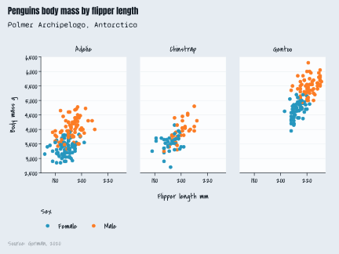
showtext::showtext_auto(enable = FALSE)2. Visualise spatial data
As ggblanket wraps the ggplot2::geom_sf and
ggplot2::geom_raster functions, spatial vector and array
data can be visualised.
sf::st_read(system.file("shape/nc.shp", package = "sf"),
quiet = TRUE) |>
gg_sf(col = AREA,
pal = RColorBrewer::brewer.pal(9, "Blues")) +
ggeasy::easy_remove_axes()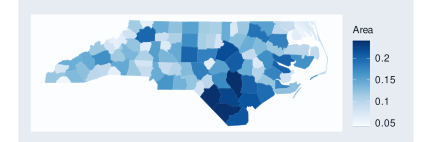
stars::read_stars(system.file("tif/L7_ETMs.tif", package = "stars")) |>
tibble::as_tibble() |>
gg_raster(x = x,
y = y,
col = L7_ETMs.tif,
facet = band,
col_title = "") +
ggeasy::easy_remove_axes()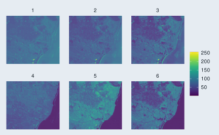
3. Turn off either colour or fill
Users can turn off either the colour (i.e. of the outlines)
or fill of a geom that contains both. A method is to use
alpha = 0 for the fill or
pal = scales::alpha("red", 0) for the colour.
p1 <- iris |>
gg_density(
x = Sepal.Length,
col = Species,
alpha = 0,
col_legend_nrow = 2,
col_labels = str_to_sentence,
title = "Turn off either colour or fill",
theme = light_mode(title_face = "plain"))
p2 <- iris |>
gg_density(
x = Sepal.Length,
alpha = 0)
p3 <- iris |>
gg_density(
x = Sepal.Length,
col = Species,
pal = scales::alpha(pal_discrete, 0),
col_legend_nrow = 2,
col_labels = str_to_sentence)
p4 <- iris |>
gg_density(
x = Sepal.Length,
pal = scales::alpha(pal_blue, 0))
(p1 + p2) / (p3 + p4) 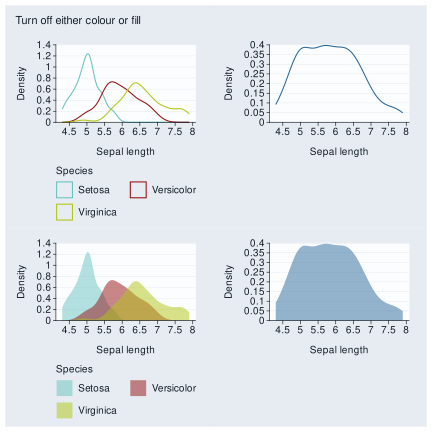
4. Fix either colour or fill to something different
Users can also fix either the colour (i.e. of the outlines)
or fill of a geom to something different than the pal. A
method for where there is a col variable is to add a
colour = "black" or fill = "lightgrey"
argument. If no col variable is desired, just use col = 1
and col_legend_place = "n".
p1 <- iris |>
gg_density(
x = Sepal.Length,
col = 1,
stat = "density",
pal = pal_blue,
colour = "black",
col_legend_place = "n",
title = "Fix a different colour or fill",
theme = light_mode(title_face = "plain"))
p2 <- iris |>
gg_density(
x = Sepal.Length,
col = 1,
stat = "density",
pal = pal_blue,
fill = "lightgrey",
col_legend_place = "n")
p3 <- iris |>
gg_density(
x = Sepal.Length,
col = Species,
fill = "lightgrey",
col_legend_nrow = 2,
col_labels = str_to_sentence)
p4 <- iris |>
gg_density(
x = Sepal.Length,
col = Species,
colour = "black",
col_legend_nrow = 2,
col_labels = str_to_sentence)
(p1 + p2) / (p3 + p4) 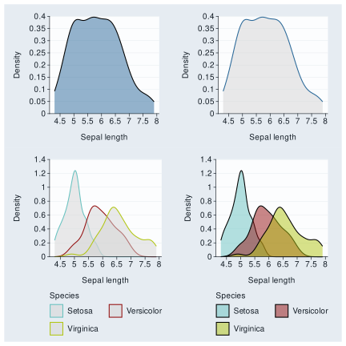
5. Use the mapping argument
The mapping argument provides additional flexibility to
access the linetype, shape and
size aesthetics. It also allows for positional
x and y variables to be provided within a
function, such as within after_stat. Note the
colour, fill and alpha aesthetics
cannot be added within the ggblanket mapping argument.
These plots could potentially be made using the gg_blank
function and relevamt geom_* layer.
penguins |>
gg_point(x = flipper_length_mm,
y = body_mass_g,
col = species,
mapping = aes(shape = species))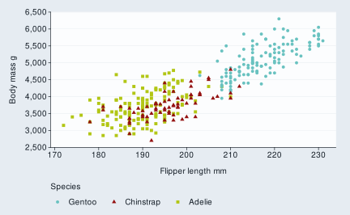
penguins |>
gg_histogram(x = flipper_length_mm,
mapping = aes(y = after_stat(density)),
facet = species)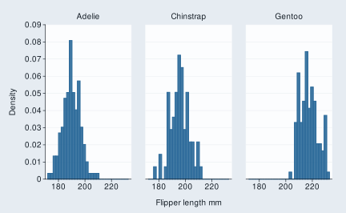
6. Change the stat
The default stat of each gg_* function can
be changed for additional flexibility. Note that you can only use
stat character strings and not functions.
p1 <- penguins |>
gg_pointrange(
x = species,
y = flipper_length_mm,
stat = "summary",
size = 0.1,
x_labels = \(x) str_sub(x, 1, 1))
p2 <- penguins |>
gg_bar(x = flipper_length_mm,
stat = "bin")
p1 + p2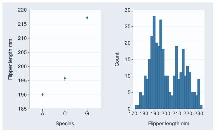
7. Create custom wrapper functions
You can create powerful custom functions. This is because the
... argument can allow you to access all arguments
within the ggblanket gg_* function (and applicable
ggplot2::geom_* function).
gg_point_custom <- function(data, x, y, col,
size = 3,
shape = 17,
pal = RColorBrewer::brewer.pal(8, "Dark2"),
col_title = "",
col_legend_place = "t",
...) {
data |>
gg_point(x = {{ x }}, y = {{ y }}, col = {{col}},
size = size,
shape = shape,
pal = pal,
col_title = col_title,
col_legend_place = col_legend_place,
col_labels = str_to_sentence,
...)
}
iris |>
gg_point_custom(
x = Sepal.Width,
y = Sepal.Length,
col = Species)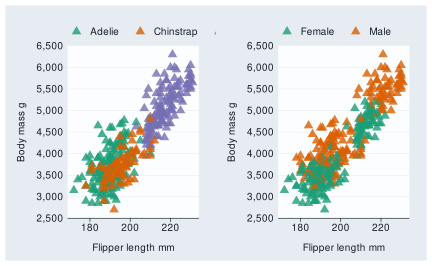
8. Work with extension packages
ggblanket can work with a lot of extension packages.
patchwork
The patchwork package enables plots to be patched together.
p1 <- mtcars |>
gg_point(x = mpg,
y = disp)
p2 <- mtcars |>
gg_boxplot(x = gear,
y = disp,
group = gear,
width = 0.5)
p3 <- mtcars |>
gg_smooth(x = disp,
y = qsec,
x_breaks = scales::breaks_pretty(4))
(p1 | p2) / p3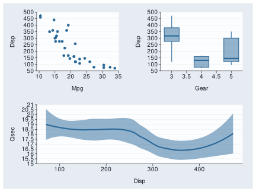
ggtext
The ggtext package enables plot text to use markdown syntax. The applicable markdown theme elements need to be added to the plot.
Note if you want to have some or all of a title not bold, then it’s
important to change the default theme have a plain title - as otherwise
the gg_theme defaults to bold.
penguins |>
gg_blank(
x = flipper_length_mm,
y = body_mass_g,
title = "**Bold** or _italics_ or <span style = 'color:red;'>red</span>",
theme = light_mode(title_face = "plain")
) +
theme(plot.title = ggtext::element_markdown())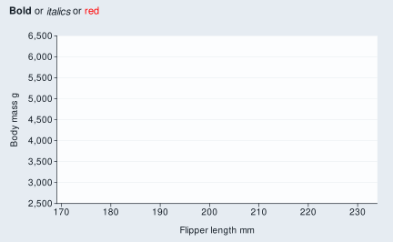
penguins |>
gg_point(
x = bill_length_mm,
y = bill_depth_mm,
col = species,
facet = island,
facet2 = sex,
x_title = "**Bill length** (mm)",
y_title = "**Bill depth** (mm)",
col_title = "**Species**",
title = "***Pygoscelis*** **penguin** bill lengths and depths",
subtitle = "<span style = 'color: #53B0AE ;'>**Adelie**</span>,
<span style = 'color:#A31414;'>**Chinstrap**</span>,
*and* <span style = 'color:#B2C615;'>**Gentoo**</span>",
x_labels = \(x) glue::glue("_{x}_"),
y_labels = \(x) glue::glue("_{x}_"),
col_labels = \(x) glue::glue("_{x}_"),
facet_labels = \(x) glue::glue("_{x}_"),
theme = light_mode(title_face = "plain")
) +
theme(
plot.title = ggtext::element_markdown(),
plot.subtitle = ggtext::element_markdown(),
axis.title.x = ggtext::element_markdown(),
axis.title.y = ggtext::element_markdown(),
axis.text.x = ggtext::element_markdown(),
axis.text.y = ggtext::element_markdown(),
legend.title = ggtext::element_markdown(),
legend.text = ggtext::element_markdown(),
strip.text.x = ggtext::element_markdown(),
strip.text.y = ggtext::element_markdown())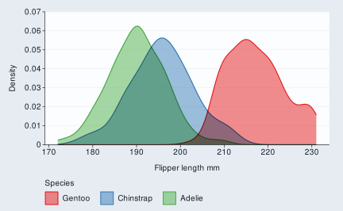
ggpattern
The ggpattern package can be used to add patterns to geoms.
library(ggpattern)
penguins |>
group_by(species, sex) |>
summarise(across(body_mass_g, \(x) mean(x))) |>
gg_blank(x = body_mass_g,
y = species,
col = sex,
position = "dodge",
pal = c("#2596be", "#fc7c24"),
x_include = 0) +
geom_col_pattern(aes(pattern = sex),
position = "dodge",
alpha = 0.9,
width = 0.75) +
guides(pattern = guide_legend(reverse = TRUE)) + #same direction the col scale
labs(pattern = "Sex") #name same as the col_title 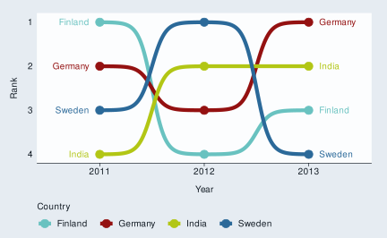
ggrepel
The ggrepel package can be used to neatly avoid overlapping labels.
mtcars |>
tibble::rownames_to_column("car") |>
filter(wt > 2.75, wt < 3.45) |>
gg_point(x = wt, y = mpg) +
ggrepel::geom_text_repel(aes(label = car), col = "#2B6999") 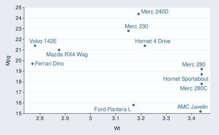
ggh4x
The ggh4x package includes enhanced facet functionality.
iris |>
rename_with(\(x) snakecase::to_snake_case(x)) |>
mutate(across(species, \(x) stringr::str_to_sentence(x))) |>
mutate(size = if_else(species == "Setosa", "Short Leaves", "Long Leaves")) |>
gg_point(x = sepal_width,
y = sepal_length,
x_breaks = scales::breaks_pretty(n = 3)) +
ggh4x::facet_nested(cols = vars(size, species), nest_line = TRUE, solo_line = TRUE) +
theme(strip.text.x = element_text(margin = margin(t = 2.5, b = 5)))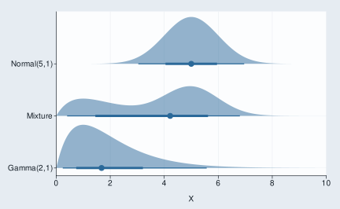
gghighlight
The gghighlight package enables geoms or parts thereof to be
highlighted. It should be noted that the gg_* function
builds the scale for the data that it thinks will be within the panel.
Therefore in some situations, you may need to add another
ggplot scale to ensure the full height of the non-highlighted data is
included.
penguins |>
gg_point(x = flipper_length_mm,
y = body_mass_g) +
gghighlight::gghighlight(body_mass_g >= 5000)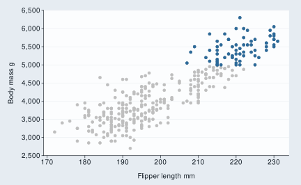
iris |>
gg_histogram(
x = Sepal.Length,
col = Species,
facet = Species,
facet_labels = str_to_sentence,
pal = rep(pal_blue, 3)
) +
gghighlight::gghighlight() +
scale_y_continuous(expand = c(0, 0))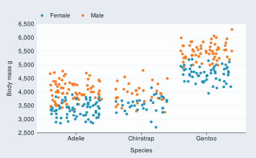
ggeasy
The ggeasy package provides a lot of support for easily modifying themes. Removing axes often is useful for maps.
penguins |>
gg_point(
x = flipper_length_mm,
y = body_mass_g,
col = sex) +
ggeasy::easy_remove_axes() 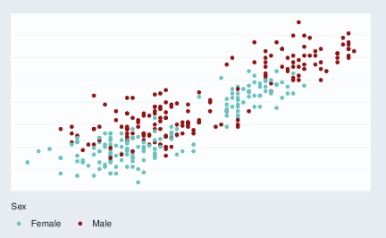
ggblend
The ggblend package provides blending of colours.
penguins |>
gg_blank(
x = flipper_length_mm,
col = species,
pal = RColorBrewer::brewer.pal(9, "Set1"),
stat = "density") +
geom_density(alpha = 0.5) |> ggblend::blend("multiply")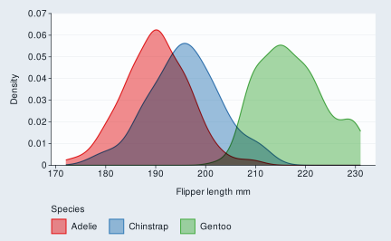
ggdensity
The ggdensity package provides visualizations of density estimates.
iris |>
mutate(Species = str_to_sentence(Species)) |>
gg_blank(
x = Sepal.Width,
y = Sepal.Length,
col = Species,
facet = Species,
col_legend_place = "r",
col_title = "\nSpecies") + #add space between legends
ggdensity::geom_hdr(col = NA) +
labs(alpha = "Probs") 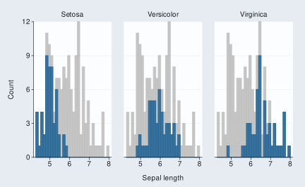
ggridges
The ggridges package enables ridgeline plots.
ggridges::Catalan_elections |>
rename_with(snakecase::to_snake_case) |>
mutate(year = factor(year)) |>
gg_blank(
x = percent,
y = year,
col = option,
y_expand = c(0, 0),
col_title = "",
col_legend_rev = TRUE,
pal = pal_discrete[c(3, 1)],
x_limits = c(0, 100),
coord = coord_cartesian(clip = "on")) +
ggridges::geom_density_ridges(
alpha = 0.8,
col = "white")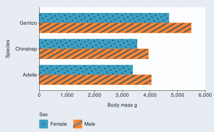
ggbeeswarm
The ggbeeswarm package can be used to create scatter plots that avoid overlapping points.
penguins |>
gg_blank(x = species,
y = body_mass_g) +
ggbeeswarm::geom_quasirandom(colour = pal_blue)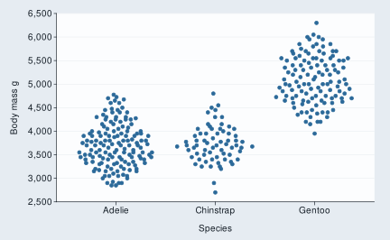
ggdist
The ggdist package enables the visualisation of uncertainty. The key
to making this work with ggblanket is ensuring that
gg_blank builds the distribution scale correctly. You can
hack this by adding *min and *max aesthetics
of a very low and very high quantile of the distributions. However, it
might be easier to just use ggplot2 here.
library(distributional)
d <- data.frame(
name = c("Gamma(2,1)", "Normal(5,1)", "Mixture"),
dist = c(
dist_gamma(2, 1),
dist_normal(5, 1),
dist_mixture(
dist_gamma(2, 1),
dist_normal(5, 1),
weights = c(0.4, 0.6))
))
d |>
mutate(dist_min = quantile(dist, 0.001),
dist_max = quantile(dist, 0.999)) |> #to get scales functionally
gg_blank(
y = name,
xmin = dist_min, xmax = dist_max, #to get scales functionally
y_expand = c(0.05, 0.05),
y_title = "") +
ggdist::stat_slabinterval(
aes(dist = dist),
colour = pal_blue,
fill = scales::alpha(pal_blue, 0.5))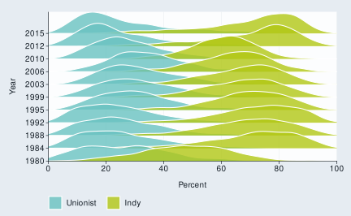
d <- tibble(x = 1:10,
sd = seq(1, 3, length.out = 10)) |>
mutate(dist = distributional::dist_normal(x, sd))
d |>
mutate(dist_min = quantile(dist, 0.05),
dist_max = quantile(dist, 0.95)) |> #to get scales functionally
gg_blank(
x = x,
ymin = dist_min, ymax = dist_max) + #to get scales functionally
ggdist::stat_lineribbon(aes(ydist = dist)) +
scale_fill_brewer() +
labs(fill = "Level") 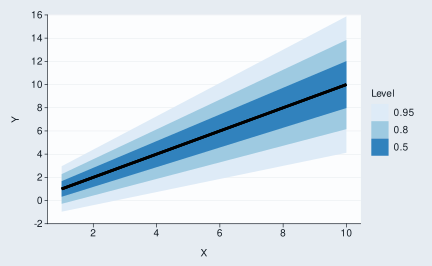
plotly::ggplotly
The plotly::ggplotly function enables interactive plots.
The text aesthetic can be used to customise tooltips.
Alternatively, use
plotly::ggplotly(p, tooltip = c("x", "y", "fill")) or
plotly::ggplotly(p).
ggiraph
The ggiraph package enables interactive plots.
p <- diamonds |>
gg_blank(
x = color,
y_include = 0,
stat = "count",
theme = light_mode(base_family = "arial", base_size = 9)) +
ggiraph::geom_bar_interactive(
aes(tooltip = after_stat(count),
data_id = color),
width = 0.75,
col = pal_blue,
fill = pal_blue,
alpha = 0.9)
ggiraph::girafe(
ggobj = p,
height_svg = 3,
width_svg = 5,
options = list(
ggiraph::opts_sizing(rescale = TRUE, width = 0.7),
ggiraph::opts_tooltip(use_fill = TRUE),
ggiraph::opts_hover(css = "stroke:black;stroke-width:1px;")))gganimate
The gganimate package enables animated plots.
gapminder::gapminder |>
gg_blank(
x = gdpPercap,
y = lifeExp,
col = country,
facet = continent,
x_trans = "log10",
pal = gapminder::country_colors,
col_legend_place = "n",
title = "Year: {frame_time}",
x_title = "GDP per capita",
y_title = "Life expectancy",
y_include = 0) +
geom_point(aes(size = pop), alpha = 0.7, show.legend = FALSE) +
scale_size(range = c(2, 12)) +
gganimate::transition_time(year) +
gganimate::ease_aes("linear")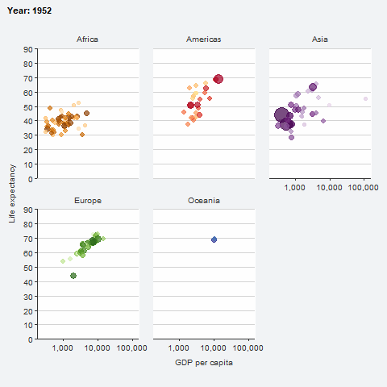